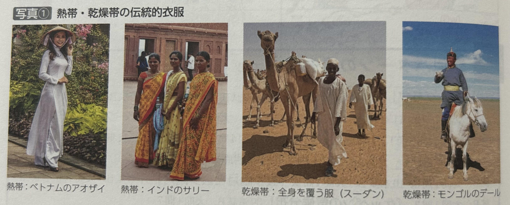
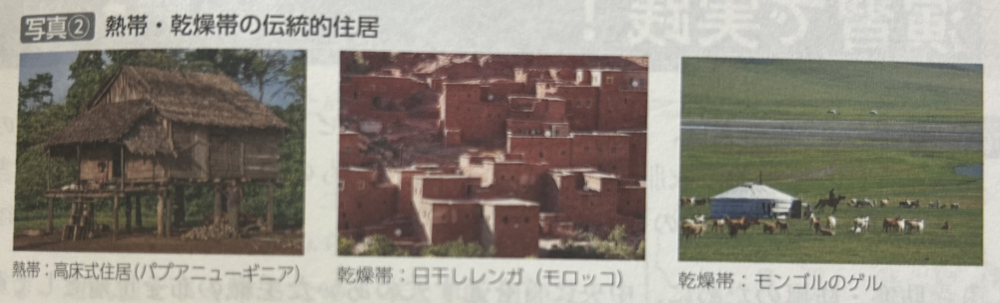
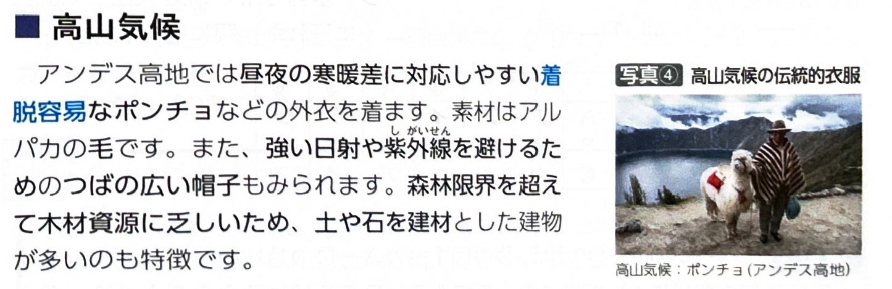

第2章 気候・植生・土壌 - 気候と生活文化
ポイント総復習
1. 気候と伝統的な生活文化
伝統的な生活文化（衣服や住居など）は、その地域の自然環境、特に「気候」に強く適合して発達してきました。
2. 熱帯の生活文化
- 衣服：高温多湿に対応するため、通気性や吸湿性に優れた麻や木綿を用いた涼しい衣服がみられます。（例：ベトナムのアオザイ、インドのサリーなど）
- 住居：風通しを良くするために窓や出入り口を広く取ります。また、地表の熱や湿気、洪水、毒蛇などの獣害を避けるために床を高くした高床式住居が多くみられます。
- 屋根の形：スコールなどの激しい雨（多雨）に対応するため、雨水を素早く流し落とせる急勾配（傾斜の急な）屋根になっています。

3. 乾燥帯の生活文化
- 衣服：強い日射や砂埃（砂塵）から肌を守り、日陰を作って発汗・蒸発を促すため、全身を覆うゆったりとした衣服が着られます。（※イスラーム圏では、女性が肌を露出してはいけないという教義の影響もあります。）
- 住居の材料：樹木などの建材が少ないため、土や泥、わらなどを混ぜて乾燥させた日干しレンガ（アドベ）が広く用いられます。
- 住居の構造：昼夜の激しい寒暖差や熱風、砂埃が室内に入るのを防ぐため、壁は厚く、窓は小さく作られます。また、雨がほとんど降らないため、屋根は平ら（陸屋根）になっています。

4. 遊牧民の生活文化
乾燥帯（ステップなど）で家畜とともに移動しながら生活する遊牧民は、独特の文化をもっています。
- 移動式家屋：組み立てや解体が容易なテント式の住居を利用します。（例：モンゴルのゲル、中国のパオなど）
- 衣服：例えばモンゴルでは、厳しい冬の寒さに対応するため、防寒性の高いデールとよばれる伝統的な衣服が着られます。
5. 温帯・亜寒帯（冷帯）・寒帯・高山気候
ヨーロッパ南部のCs（地中海性気候）地域では、木材資源は乏しい一方、石灰岩が豊富なため、石造り住居が多いです。また、夏の強い日射を避けるため、壁を白く塗り、窓が小さいことも特徴です。
- 木造住居：森林が多く、木材資源が豊富な温帯や亜寒帯（冷帯）で中心の住居です。
- 高床式住居：永久凍土地帯で、凍結により地面が押し上げられる凍上現象や凍土の融解によって建物が傾くのを防ぐための重要な建築様式です。
- 寒帯では、動物の毛皮を利用した保温性の高い衣服や、定住が難しく、狩猟や遊牧が中心の地域では、雪や氷で作る移動式住居であるイグルーがみられます。

基礎問題（理解度チェック）
Q1. 熱帯の生活文化について、空欄を埋めなさい。
熱帯では高温多湿に対応するため、通気性や吸湿性に優れた
の衣服が着られる。ベトナムの
などがその代表例である。また、住居は地表の熱や洪水、獣害を避けるために
となっていることが多く、多量の雨水を素早く流すために屋根は
になっている。
Q2. 乾燥帯の生活文化について、空欄を埋めなさい。
乾燥帯では、強い日射や砂埃を避けて日陰を作り発汗を促すため、
ゆったりとした衣服が着られる。建材となる樹木が少ないため
を用いて家が建てられ、昼夜の激しい寒暖差や熱風などを防ぐために壁は厚く、窓は
作られる。
Q3. 乾燥帯の伝統的な住居は、まれに降る雨水を素早く流し落とすために、屋根の傾斜が急になっている（急勾配である）ことが多い。
Q4. 熱帯の住居にみられる「高床式」の構造は、風通しを良くして涼しくするだけでなく、地表の熱や湿気、洪水、さらには毒蛇などの獣害から身を守るという合理的な目的がある。
Q5. 遊牧民の生活文化について、空欄を埋めなさい。
乾燥帯（ステップ地域など）で遊牧生活を送る人々は、移動に便利な組み立て・解体が容易なテント式住居を利用する。モンゴルの
や中国の
がその代表例である。また、モンゴルでは厳しい冬の寒さに備えて、防寒性の高い
とよばれる伝統的衣服が着られる。